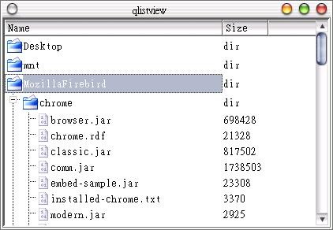

QListView
類別提供樹狀的列示元件，可以顯示多欄與樹狀結構，它常與QListViewItem或者是QCheclListItem一同使用；使用
QListView最簡單的方式，就是以QListView作為樹根，並使用addColumn()方法加入欄位，然後使用QListViewItem或
QCheckListItem指定這個QListView作父節點，例如：
QListView *root;
root->addColumn( "Name" );
root->addColumn( "Size" );
QListViewItem element = new QListViewItem(root, "fName", "fSize");
上面是在QListView中加入一個QListViewItem的方法，我們也可以指定一個QListViewItem作為父節點，而子節點會自動內縮
於父節點之內；通常若要加入至樹枝或樹葉的項目是有一個規律，例如HTML或是XML文件，我們會使用迴圈來加入這些項目，例如下面的程式片段加入新的屬
性項目至之前的element子節點之中，成為它的子節點：
for ( int i = 0 ; i < attributes.length(); i++ ) {
new QListViewItem(element, attributes.qName(i), attributes.uri(i) );
}
下面這個程式我們綜合前面的FileInfo類別與QDir類別，使用遞迴查詢出使用者家目錄下的所有目錄與檔案，但不包括隱藏檔與符號連結，我們將查詢的結果分為目錄與檔案，並使用QListView類別的樹狀結構加以顯示：
#include <qapplication.h>
#include <qlistview.h>
#include <qdir.h>
#include <qfileinfo.h>
#include <qpixmap.h>
void dirlist(QListViewItem*, QFileInfo*);
int main(int argc, char **argv) {
QApplication app(argc, argv);
QListView *root = new QListView();
root->addColumn("Name");
root->addColumn("Size");
QDir d = QDir::home();
d.setFilter(QDir::Files | QDir::Dirs | QDir::NoSymLinks);
d.setSorting(QDir::DirsFirst | QDir::Name);
const QFileInfoList *list = d.entryInfoList();
QFileInfoListIterator it(*list);
QFileInfo *fi;
QListViewItem *child;
while((fi = it.current()) != 0) {
if ( fi->fileName() == "." || fi->fileName() == ".." );
else if(fi->isDir()) {
child = new QListViewItem(root, fi->fileName().latin1(), "dir");
child->setPixmap(0, QPixmap( "dirclosed.xpm" ));
dirlist(child, fi);
}
else {
child = new QListViewItem(root,
fi->fileName().latin1(), QString::number(fi->size()));
child->setPixmap(0, QPixmap( "file.xpm" ));
}
++it;
}
app.setMainWidget(root);
root->show();
return app.exec();
}
void dirlist(QListViewItem *parent, QFileInfo *pfi) {
QDir d;
d.setPath(pfi->filePath());
d.setFilter(QDir::Files | QDir::Dirs | QDir::NoSymLinks);
d.setSorting(QDir::DirsFirst | QDir::Name);
const QFileInfoList *list = d.entryInfoList();
QFileInfoListIterator it(*list);
QFileInfo *fi;
QListViewItem *child;
while((fi = it.current()) != 0) {
if ( fi->fileName() == "." || fi->fileName() == ".." );
else if(fi->isDir()) {
child = new QListViewItem(parent, fi->fileName().latin1(), "dir");
child->setPixmap(0, QPixmap("dirclosed.xpm" ));
dirlist(child, fi);
}
else {
child = new QListViewItem(parent,
fi->fileName().latin1(), QString::number(fi->size()));
child->setPixmap(0, QPixmap("file.xpm" ));
}
++it;
}
}
QListView本身的使用基本上很簡單，這個程式本身反而是遞迴查詢的部份要注意，其中我們查詢到的".."與"."並不作任何的處理，而若查詢到是目錄，就將之加入QListView樹狀結構中，然後以該目錄名稱作基礎，再次呼叫dirlist()進行遞迴查詢。
為了分辨是目錄或檔案，我們簡單的使用兩個圖案作區別，您也可以進一步配合事件處理，讓目錄的圖案在按下後，會有開啟與關閉的差別，這就請自己試試看吧！
下圖是程式執行時的畫面：

|
|